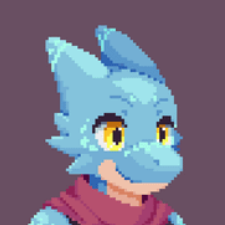

It's a furry suit, what did you expect?

Their origin dates back to many decades ago, but it was only during the early 2000s where it first began being associated with furries. At the time, these foam structures were very primitive as they were usually either made by the people who would wear them themselves, or bought from mass producing costume companies. It was only with the appearance of specific fursuit producing business such as "Made Fur You" that the quality of fursuits increased to the point it currently is.